Information
Introducción
Este tutorial cubre material que no está realmente en R for Data Science (2e) de Hadley Wickham, Mine Çetinkaya-Rundel y Garrett Grolemund. Pero el material está en consonancia con el espíritu de ese libro. El material cubierto en Capítulo 5 Flujo de trabajo: estilo de código aparece en el tutorial RStudio and Code de este paquete.
Los profesionales almacenan su trabajo en Github o una herramienta similar de “control de código fuente”. Si tu ordenador se estropea gravemente, no querrás perder tu trabajo. Github es como Google Drive, ambos viven en la nube, pero para tu trabajo estadístico en lugar de tus documentos.
Este tutorial te introducirá a Github y también a Git, un programa para realizar un seguimiento de los cambios en tu código.
La referencia más útil para Git/Github/RStudio es Happy Git and GitHub for the useR. Busca en ese libro cuando tengas un problema.
Resumen del Terminal
El Terminal de RStudio es la forma en que te comunicas directamente con el ordenador mediante comandos, mientras que la Consola de RStudio es la forma como te comunicas con R.
Esta sección te ayudará a conocer el Terminal para que estés al día con los comandos necesarios para el resto del tutorial.
Ejercicio 1
Comienza abriendo la pestaña Terminal en RStudio. Está junto a la pestaña Consola, dentro del panel Consola.
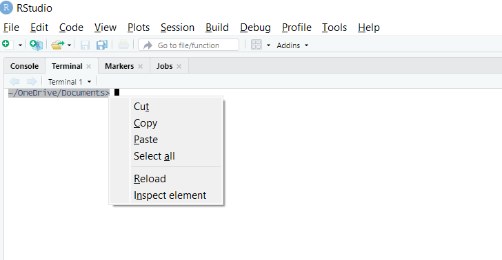
Deberías ver un texto, que es la ruta de tu archivo seguido de un cursor (prompt) después de un signo de dólar. Copia (resaltando, luego haciendo clic con el botón derecho y seleccionando la opción “copiar”) y pega tu ruta (como en el ejemplo anterior) en el cuadro a continuación.
Abreviamos estas instrucciones para copiar/pegar el comando/respuesta como CP/CR a lo largo de este tutorial.
Ejercicio 2
Para practicar, intenta pegar el comando pwd en la
siguiente línea de tu Terminal y presiona retorno. CP/CR.
Esto debería devolver un valor parecido a
/Users/dkane/Desktop/projects/. Tu respuesta será
diferente, sobre todo porque es poco probable que tu nombre de usuario
sea dkane. Esta es la ubicación en tu ordenador donde se
inició el programa R cuando abriste RStudio.
Eso es todo lo que necesitas saber sobre el Terminal para este tutorial. En el futuro, completarás un tutorial dedicado por separado llamado “Terminal”. Asegúrate de prestar especial atención a si los comandos dados deben ejecutarse en la Consola de R o en el Terminal del sistema.
Configuración de GitHub
GitHub es como una unidad en línea para todos tus proyectos y código en R. En el mundo profesional, lo que tienes en tu cuenta de GitHub es más importante que lo que tienes en tu currículum. Es una demostración comprobable de tus habilidades.
Ejercicio 1
Instala Git siguiendo las instrucciones del capítulo Instalar Git en Happy Git and GitHub for the useR.
Después de instalar Git, debes reiniciar RStudio para que tenga la
oportunidad de “reconocer” que Git está instalado. Luego, haz clic en el
panel Terminal. Ejecuta git --version en el Terminal para
asegurarte de que Git esté instalado y accesible.
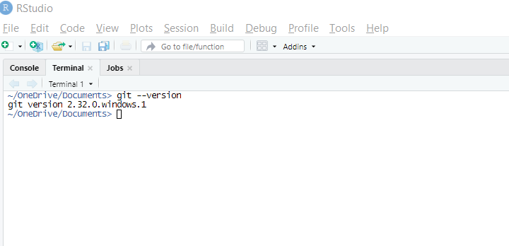
CP/CR.
Pro Git es el mejor libro de referencia para Git y Github (en inglés). Y en castellano puedes consultar los capítulos de Gestión de Código y de Trabajar con un repositorio git en RStudio de la Guia Práctica DataOps.
Ejercicio 2
El siguiente paso es crear una cuenta de GitHub siguiendo las instrucciones en la página de inicio de GitHub. Sigue este consejo al elegir tu nombre de persona usuaria.
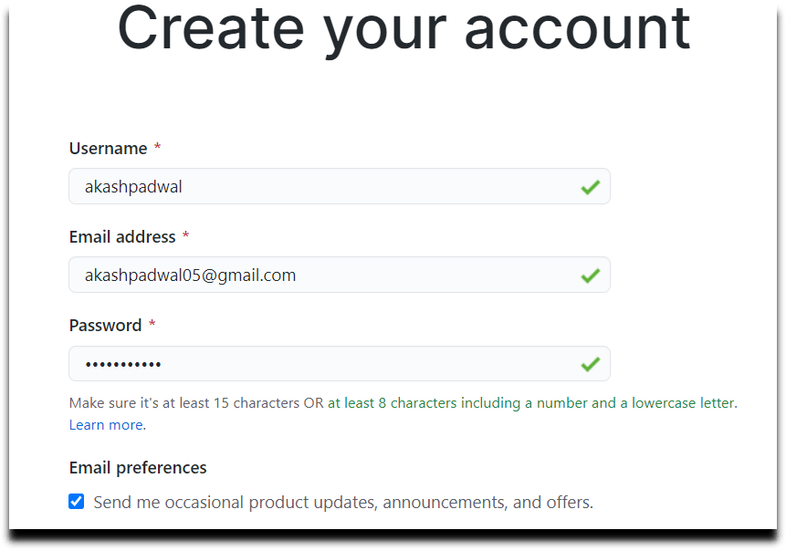
Copia la URL de tu cuenta de GitHub en el campo a continuación. Debería verse como:
https://github.com/tu-nombre-usuaria
Git es un “software para rastrear cambios en cualquier conjunto de archivos, generalmente utilizado para coordinar el trabajo entre personas programadoras que desarrollan código fuente en colaboración durante el desarrollo del software”.
Ejercicio 3
Ahora que tienes tu cuenta de GitHub, debes conectarla a RStudio. El primer paso para hacer esto es darle a RStudio el correo electrónico de tu cuenta de GitHub y tu nombre.
Ejecuta
usethis::use_git_config(user.name = "tu-nombre-usuaria", user.email = "tu@correo-e.org")
en la consola, sustituyendo el correo electrónico y el nombre que usaste
para tu cuenta de GitHub.
Ejecuta git config --global user.name en el
Terminal para asegurarte de que tu ordenador recuerda tu nombre
de persona usuaria de GitHub. CP/CR
Luego, ejecuta git config --global user.email en el
Terminal para asegurarte de que tu correo electrónico de GitHub
también esté almacenado.
CP/CR
Ahora, tu nombre de persona usuaria y correo electrónico de GitHub se almacenan para que tu ordenador pueda automatizar muchas de las tediosas acciones requeridas para comunicarse con GitHub.
Nota: Asegúrate de haber recibido los resultados esperados del nombre y el correo electrónico asociados con tu cuenta de Github para los dos últimos ejercicios.
Repositorios en GitHub
Si GitHub es como nuestro Google Drive o similar, los repositorios de GitHub, o “repos”, son como las carpetas de Google o similar donde almacenamos nuestro trabajo. ¡Hagamos un repositorio para practicar!
Ejercicio 1
Para comenzar, inicia sesión en GitHub y ves a la página de inicio. Haz clic en el botón verde “New” a la izquierda del sitio web.
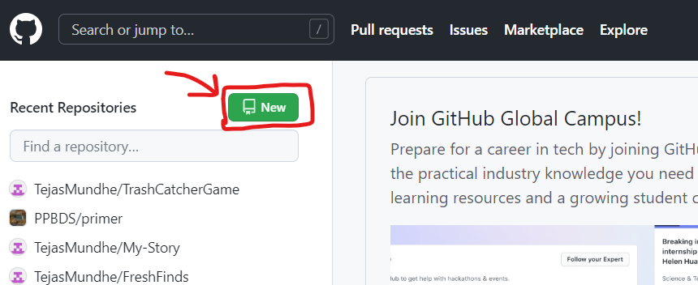
Ejercicio 2
Nombra tu repositorio Primer_Repo. Luego, selecciona la
opción “pública” para tu repositorio y marca la casilla que dice
“Agregar un archivo README”. README es un documento
en el que las personas programadoras suelen añadir o explicar detalles
de su proyecto. En caso de duda, sigue estas
instrucciones.
Una vez que hayas hecho eso, continúa y haz clic en “Create repository” para crear tu primer repositorio.
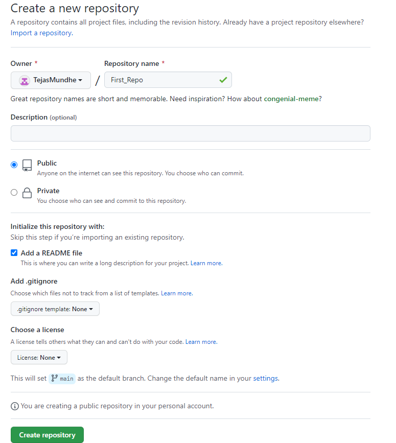
GitHub debería haberte dirigido a una página llamada página del
proyecto después de crear el repositorio. Copia la URL de la página del
proyecto y pégala a continuación. La URL debería parecerse a
github.com/tu-nombre-usuaria/Primer_Repo.
La opción “público” significa que cualquiera podrá ver el repositorio
mientras que solo tú puedes editarlo. Es posible que hayas notado “Add
.gitignore” (Añadir .gitignore) como otra opción, pero nunca marcaremos
esta opción porque RStudio creará automáticamente un archivo
.gitignore para nosotros.
Ejercicio 3
El próximo paso será crear exactamente el mismo proyecto en tu ordenador local a través del proceso de clonación. Al tener una versión local y otra en GitHub, puedes editar tu proyecto en tu ordenador y enviar todos los cambios que haya realizado a GitHub, de modo que la versión de GitHub se pueda sincronizar con tu versión local.
Para clonar el repositorio, haz clic en el botón verde que dice “Code” (Código”). Luego, copia el enlace que se muestra. Puedes usar el botón del portapapeles a la derecha para copiarlo automáticamente.
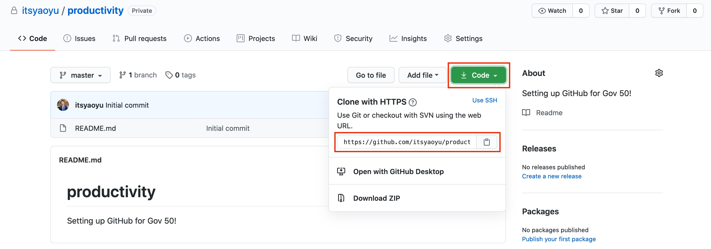
Pega el enlace a continuación.
Este enlace apunta a la carpeta de tu proyecto almacenada en GitHub.
Es ligeramente diferente de la URL de la página del proyecto porque el
sufijo .git te dice que es un objeto especial de GitHub y
no una página web.
Conectar GitHub a RStudio
Has creado un nuevo repositorio en GitHub.
Ahora, conectemos tu repositorio Primer_Repo a
RStudio.
Ejercicio 1
Empezamos haciendo un nuevo proyecto. Mientras estés creando un nuevo proyecto, no podrás acceder a este tutorial. Lee todas las instrucciones antes de hacer tu proyecto.
Haz clic en el menú desplegable en la parte superior derecha de la ventana de RStudio y haz clic en “New Project” (“Nuevo proyecto”).
Ahora, en lugar de hacer clic en “New Directory” (“Nuevo directorio”) como hicimos anteriormente, haz clic en “Version control” (“Control de versiones”). Luego, haz clic en “Git”. Estas pantallas deben parecerse a las que se muestran a continuación.
En la siguiente pantalla, pega el enlace que copiaste de GitHub en
“Repository URL” (“URL del repositorio”). Luego, asegúrate de que tu
proyecto esté en el directorio proyectos que creaste en el
tutorial RStudio y Código. Si no es así, haz clic en “Browse…”
(“Examinar…”) y selecciona la carpeta proyectos. Haz clic
en “Create Project” (“Crear Proyecto”).
Aquí hay un gif rápido que muestra el proceso.
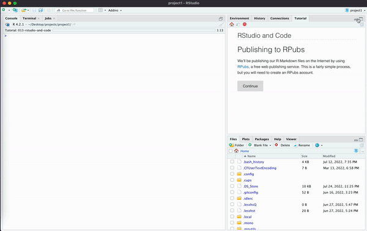
Ves a la pestaña Terminal y ejecuta git remote -v. Luego
copia y pega tanto el comando como la salida en el espacio a
continuación. El resultado debe contener el enlace original que
pegaste.
¡Has vinculado con éxito un repositorio a RStudio!
Ejercicio 2
Ahora, has vinculado tu repositorio de GitHub a tu proyecto, pero no has demostrado que eres alguien con acceso de edición al proyecto. Si permitimos que cualquier persona con el enlace de GitHub lo edite, eso obviamente generará problemas de seguridad en el futuro. Esta es la razón por la que usamos algo llamado Token de Acceso Ppersonal, o PAT (de sus siglas en inglés).
Un PAT es solo una contraseña especial generada por ordenador entre tu ordenador y GitHub que le permite a GitHub conectar tu cuenta de GitHub y tu ordenador. Si deseas obtener más información, consulta la sección “Token de acceso personal para HTTPS” de Happy Git and GitHub for the useR
Crea un PAT usando la función
usethis::create_github_token() en la Consola. Esto debería
redirigirte a una página de GitHub sobre cómo crear un PAT.
Pon “Mi primera PAT” en el campo “Nota” y mantén los ámbitos iguales a los predeterminados. Debería verse como la imagen de abajo (no tiene que ser exacto).
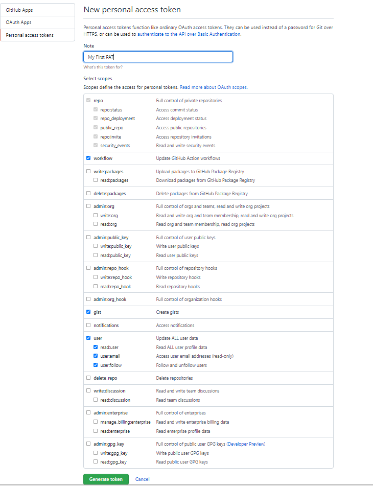
Presiona “Generate Token” (“Generar Token”) en la parte inferior de la página para finalizar tu PAT.
Ejercicio 3
Ahora que hemos creado nuestro PAT, primero cópialo temporalmente y pégalo en algún lugar al que tengas fácil acceso (por ejemplo, algun bloc de notas). Lo almacenaremos en RStudio para asegurarnos de que el ordenador no lo olvide.
Ejecuta gitcreds::gitcreds_set() en la Consola y sigue
las indicaciones, proporcionando tu token cuando se te solicite.
Ahora, reinicia tu sesión de R. Recuerda hacer esto en la sesión en
la que se ejecuta tu repositorio de github, no en la sesión en
la que se encuentra el tutorial (si usas una versión de RStudio
que permite varias sesiones abiertas a la vez para la misma persona
usuaria). Reinicia tu sesión de R yendo a “Session” (“Sesión”) en la
barra superior y haciendo clic en la opción “Restart R” (“Reiniciar R”),
que debería estar dentro de ese desplegable. Luego ejecuta
usethis::git_sitrep() en la consola y copia y pega el
resultado en el espacio a continuación.
Debería paracerse a lo siguiente:
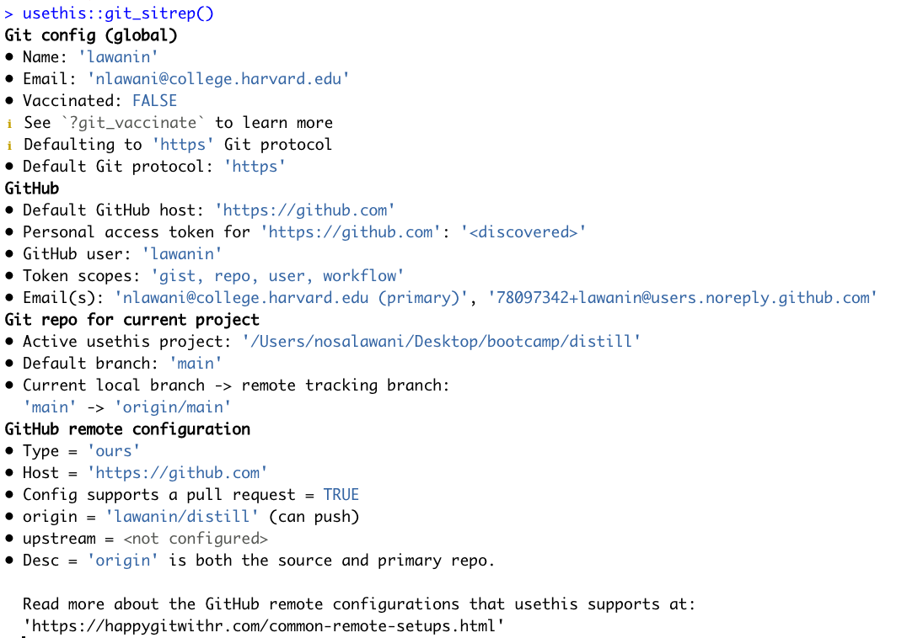
Si hay algún error, es posible que debas volver a crear tu PAT y realizar el proceso nuevamente.
Ejercicio 4
También es una buena idea guardar tu PAT de GitHub en tu archivo
.Renviron. Este es un archivo que almacena información en
tu ordenador en lugar de en tu proyecto, lo que lo convierte en un lugar
seguro para almacenar información confidencial como tu PAT de GitHub o
claves API.
Ejecuta usethis::edit_r_environ() en la Consola para
abrir tu archivo .Renviron. Si no puedes abrir el archivo,
probablemente se deba a que usas OneDrive o un servicio de unidad en la
nube para almacenar tus proyectos. Guarda tus proyectos en tu
propio ordenador para evitar futuros errores.
Agrega la línea GITHUB_PAT= seguido de tu PAT de GitHub
en la primera línea disponible de tu archivo .Renviron y guárdalo.
Asegúrate de que tu PAT esté entre “comillas” porque es una cadena de
texto.
Debería verse algo como esto.
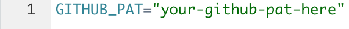
Ejecuta Sys.getenv("GITHUB_PAT") en la consola.
CP/CR.
Si estás nerviosa por compartir tu GITHUB_PAT, siéntete libre de cambiarlo después de copiarlo/pegarlo en la respuesta. Es decir, no necesitamos conocer tu GITHUB_PAT real. Solo queremos asegurarnos de que tu configuración sea correcta.
Paquetes como usethis leerán tu archivo .Renviron y
accederán a la variable GITHUB_PAT, así que asegúrate de
usar el formato correcto y nombrar tus variables correctamente.
Actualizar .gitignore
Una de las primeras cosas que debes hacer cuando trabajes con un
nuevo repositorio es actualizar el archivo .gitignore.
Puedes abrir este archivo desde la ventana inferior derecha en la
pestaña Archivos. El propósito de .gitignore es enumerar
todos los archivos que no deseas que se carguen en GitHub. Esto puede
ser útil cuando trabajas con grandes conjuntos de datos o archivos con
información privada.
Ejercicio 1
Abre .gitignore y agrega *.Rproj. El * le
dice a tu ordenador que queremos evitar que todos los archivos que
terminan en .Rproj se carguen. También puedes simplemente
agregar Primer_Repo.Rproj.
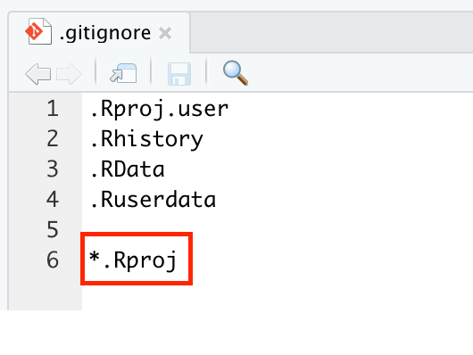
Ejercicio 2
Guarda el archivo .gitignore y, en el panel superior
derecho, ve a la pestaña Git. Deberías ver .gitignore en la
lista, pero no Primer_Repo.Rproj. La pestaña Git muestra
todos los cambios que has realizado en tu ordenador local. Dado que
agregaste Primer_Repo.Rproj en .gitignore, no
debería aparecer como uno de los archivos modificados con los que
debería sincronizarse la versión del proyecto en GitHub.
Si ves Primer_Repo.Rproj, intenta hacer clic en el botón
de actualización — un pequeño remolino en sentido contrario a las agujas
del reloj — en la parte superior derecha. O asegúrate de haberlo escrito
correctamente.
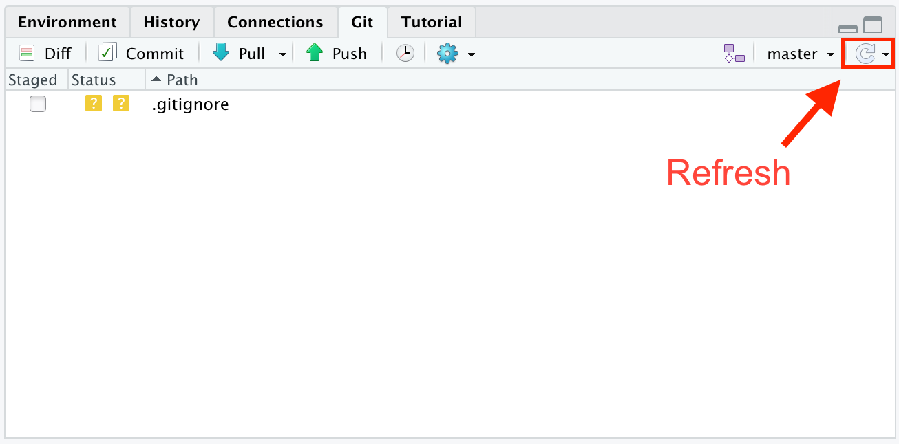
Ejecuta readLines(".gitignore") en la Consola.
CP/CR.
Esto debería generar todas las líneas en tu archivo
.gitignore, que debería incluir *.Rproj.
Ejercicio 3
Ahora que hemos actualizado nuestro archivo .gitignore,
queremos subir esta nueva versión a GitHub. De lo contrario, la versión
del proyecto en GitHub no sabe que queremos ocultar nuestro archivo
.Rproj.
Para hacerlo, ve a la pestaña Git en la parte superior derecha de tu
pantalla. Haz clic en la casilla de verificación junto al archivo
.gitignore y luego haz clic en el botón Commit
(“Cometer”, que hace referencia aquí a que git controle esta nueva
versión de los cambios realizados).
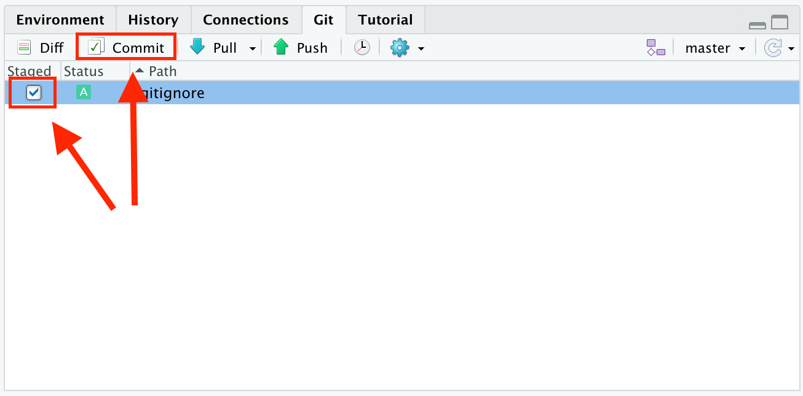
Esto abrirá una nueva ventana donde escribirás un mensaje de confirmación. El mensaje está destinado a señalar lo que estás agregando/cambiando dentro del repositorio. Y sí, es obligatorio. Es suficiente con tan solo unas pocas palabras (bien escogidas).
Ejercicio 4
Llenemos esta ventana.
Marca todas las casillas del lado izquierdo. Luego, escribe el
mensaje de confirmación “Updated .gitignore” y presiona
Commit.
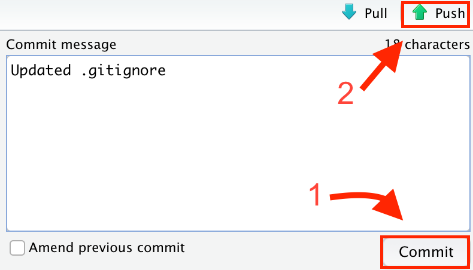
Ejecute
gert::git_log() |> select(-commit, -merge, -files) |> slice(1)
en la consola, que devuelve el autor, la hora y el mensaje del último
commit. Si aparece el error “could not find slice function”
(“no se pudo encontrar la función de corte”), carga la biblioteca
“dplyr” con library(dplyr) y vuelve a intentarlo.
CP/CR.
Ejercicio 5
A continuación, presiona Push, es decir, la flecha verde
en la parte superior derecha. ¡Esto empuja o sube los cambios a GitHub!
Abre GitHub y actualiza la página del proyecto para ver el mensaje de
confirmación que acabas de hacer en la parte superior de tu página de
repositorio.
Ejecuta gert::git_ahead_behind()$ahead en la Consola.
CP/CR.
Esto debería devolver 0, lo que muestra que tienes 0
confirmaciones desincronizadas con la versión de GitHub.
Publicar en R Pubs/Quarto Pub
Publiquemos nuestro proyecto en Internet nuevamente usando R Pubs o Quarto Pub.
Ejercicio 1
Primero hagamos un nuevo documento de Quarto (antiguamente llamado
documento de “R Markdown”). Selecciona
File -> New File -> Quarto Document
(Archivo -> Nuevo archivo -> Documento de Quarto).
Cambia el título a “Ejemplo” y mantén los demás campos con los valores
predeterminados. Guarda el archivo (“ctrl + s” para Linux y Windows,
“command + s” para Mac) y asígnale el nombre ejemplo.
RStudio agregará automáticamente el sufijo .qmd
(antiguamente era .Rmd para los documentos de “R
Markdown”).
Ejecuta list.files(). CP/CR.
Deberías ver ejemplo.qmd en algún lugar de la
salida.
Ejercicio 2
Renderiza este documento Quarto presionando el botón “Render” (“Renderizar”).
Ejecuta list.files() en la consola y copia y pega el
resultado a continuación.
ejemplo.html debe ser uno de los archivos generados.
Ejercicio 3
Observa el botón azul en la parte superior de tu qmd. Haga clic allí y selecciona Rpubs o QuartoPub, como hicimos en Rstudio y Code. Elige un slug (parte final de la URL) y publícalo. Pon la URL de tu página de Rpubs/QuartoPub a continuación:
Ejercicio 4
En la pestaña “Git” en la esquina superior derecha, marca todas las casillas junto a “.gitignore”, “ejemplo.qmd” y “ejemplo.html” para prepararlos. Presiona el botón de confirmación y agrega el mensaje de confirmación “sitio web publicado”.
Ahora, presiona el botón Push con la flecha verde. ¡Tus
cambios ahora se han guardado en Github!
Ejecuta gert::git_ahead_behind()$ahead en la Consola.
Copia y pega el comando y el resultado a continuación. Esto debería
devolver “0” como antes.
¡Buen trabajo! Has creado otra página de Rpubs/QuartoPub y tus cambios deberían estar guardados en GitHub.
Resumen
Este tutorial ha cubierto material que no está realmente en R for Data Science (2e) de Hadley Wickham, Mine Çetinkaya-Rundel y Garrett Grolemund. Pero el material está en consonancia con el espíritu de ese libro. El material cubierto en el Capítulo 5 Flujo de trabajo: estilo de código aparece en el tutorial RStudio and Code de este paquete.
Ahora deberías tener Git trabajando en tu ordenador. Deberías tener una cuenta de Github y saber cómo conectar repositorios de Github a proyectos de RStudio.
La referencia más útil para Git/Github/RStudio es Happy Git and GitHub for the useR. ¡Guárdate un marcador en tu navegador!
Download answers
- Click a button to download a file containing your answers. A window will pop up.
- Save the file onto your computer in a convenient location.